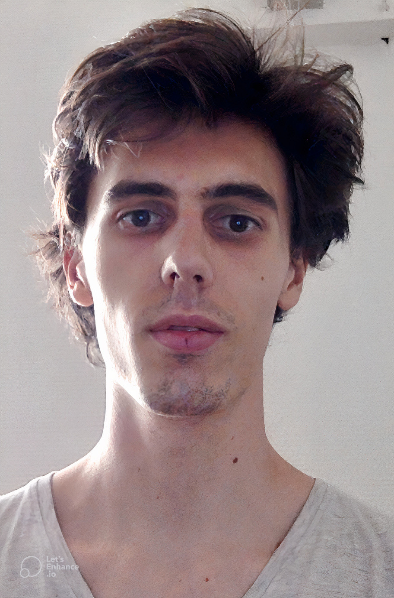

Tom Davot
About me
- Since October 2021, I am a postdoctoral research in Heudiasyc in Compiègne.
- From September 2020 to September 2021, I was a temporary teaching and research assistant (Attaché Temporaire d'Enseignement et de Recherche) at LIRMM, Montpellier.
- Before that, I did my PhD at LIRMM, Montpellier, under the supervision of Annie Chateau and Rodolphe Giroudeau.
- My research interests include graph theory, bioinformatics, complexity, approximation, parameterized complexity and operation research.
